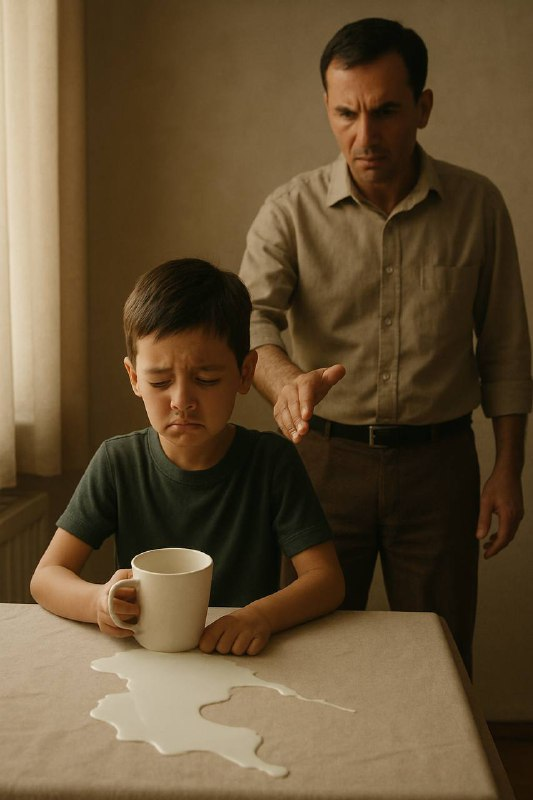

Сут сояси

(Ҳаётдан олинган қисқа ҳикоя)
Эрталаб. Қуёш ҳали парда остида. Мен кичик 7-8 ёшлар чамаси, столда сутли кружкани асталик билан ушлаб турибман. Ёнимда отам. Сокин тонг. Тинчлик.
Бир лаҳзада…
Қўлим силжиди. Қастдан эмас, балки болалик бепарволигим. Оппоқ сут столга тўкилди. Кўзларим қотди. Ҳеч нарса демаганман.
Отам ўрнидан турди. Юзида ғазаб. Бир нима деб бақира кетти. Қўл ва тилга эрк берди. Жазо тўлиқ бўлди. Бу холат кўп такрорланди, ўринсиз ишлатилган сўз, синган пиёла, оз фурсатга кечикиш.
Кўзимдан ёш ҳам, ишонч ҳам тушди. Мен ундан сўнг улғайиб барибир у даражада эътиборли инсон бўлмадим. Мен эҳтиёткор ҳам бўлмадим. Мен шунчаки қўрқувга одатланган болага айландим. Сутдан ҳам, ҳаётдан ҳам, хато қилишдан чўчиб улғайдим.
Йиллар ўтди. Унутмадим. Ҳар гал ниманидир ушлаш керак бўлса — титрайман.
Йиллар ўтди… Мен ота бўлдим.
Қизим кеча тўкди. Сут. Хонани хаяжон ва қўрқув тўлдирдирди. Кўзларимга қаради. Сўраётган эди: “Уришасизми?”
Мен эса аста у тарафга бурилдим ва юмшоқлик билан дедим:
“Ҳеч қиси йўқ, жоним, атайлаб қилганингиз йўқ, Сиз — сутдан ҳам қадрлисиз, қизим.”
У жим турди. Хижолатга чўмди. Илк марта ишонди, масулият хис этди. Қўлидан келганча зарарни бартараф эта кетти.
Бола хаётни хатолардан ҳам ўрганади. Лекин меҳрсиз, ғализ ва тошбағир муҳитда эмас. Қўрқув — тарбия усули эмас, у сабр, ибрат ва ишонч махсули.